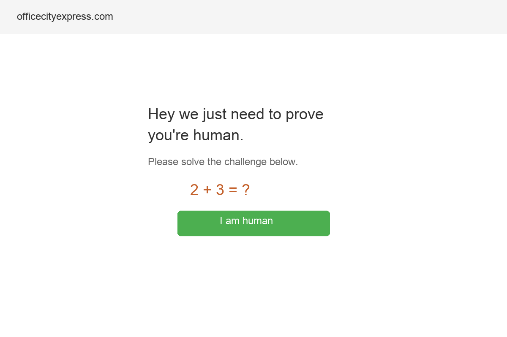

Office City Express is a family-owned office supply and furniture dealer that has been serving Central Ohio businesses since 1985. Based at 2097 London Road, Suite G, in Delaware, Ohio, the company carries everything from staples, copy paper, toner, and filing supplies to rubber stamps, imprinted goods, office snacks, janitorial supplies, and safety equipment. Under the leadership of owner Andrew Ives and VP of Sales Michelle Ives, the business has built its reputation on relationships, personal service, and a deep understanding of what Ohio businesses actually need to run their offices.
That is not a small thing. In a world where Amazon can deliver office supplies to your door in 24 hours and Office Depot has a location on Sunbury Road, the fact that Office City Express has survived and thrived for nearly 40 years says something important about how they treat their customers. They compete on knowing your name, understanding your reorder patterns, and solving problems before they become emergencies.
And now, something significant has happened: on March 16, 2026, Office City Express announced a strategic merger with FriendsOffice, a leading Ohio-based office products and workplace solutions provider. This merger brings expanded capabilities including commercial print services, promotional products, and an expanded selection of janitorial and facility supplies. Many familiar Office City Express team members will continue serving customers as part of the combined organization.
As Andrew Ives himself stated: "For nearly four decades, we have built our business on relationships, service, and local commitment. By joining forces with FriendsOffice, we are able to bring our customers expanded services and greater resources while maintaining the continuity and personal support they expect."
This merger represents a major growth moment for Office City Express and it makes the need for a strong digital presence more urgent than ever. New capabilities need new visibility. Expanded services need a platform to showcase them. And the combined customer base across Columbus, Chillicothe, Marysville, Delaware, and Marion needs a modern, functional website where they can discover what is now possible.
The product and service range is much broader than most people realize. Office City Express is a comprehensive workplace solutions provider:
With the FriendsOffice merger, this list now expands to include commercial print services and a broader range of promotional products, capabilities that position the combined company as a true one-stop workplace solutions provider.
Family-owned businesses do not survive for 39 years by accident. The Ives family has navigated the rise of big-box office stores, the Amazon revolution, the shift to remote work, and the post-pandemic office transformation. Each of these disruptions eliminated competitors. Office City Express adapted and survived because of something the big players cannot replicate: genuine relationships with the businesses they serve.
That said, the digital landscape has fundamentally changed how B2B buyers discover and evaluate suppliers. Even the most loyal customers sometimes Google "office supplies Delaware OH" and right now, what they find is not Office City Express.

Captured March 29, 2026
Office City Express has a website at officecityexpress.com but there is a critical problem. The site is blocked by a bot challenge page that requires visitors to solve a math problem before they can access any content. This means search engines cannot crawl the site, and many customers, especially those on mobile or using assistive technology, may never get past the front door.
When someone visits officecityexpress.com, they see a math challenge ("2 + 3 = ?") and a button that says "I am human." This is a security measure but it creates several serious problems:
Based on search engine snippets and cached data, the website behind the challenge appears to be a FriendsOffice-powered e-commerce platform (consistent with the recent merger). The snippets reference product categories including office supplies, furniture, toner, and filing supplies. The site has individual product pages with descriptions and pricing. However, the bot challenge means none of this content is accessible to search engines or easily accessible to customers.
Different online sources list different addresses for Office City Express: 2097 London Road, Suite G (Chamber listing) and 149 Johnson Drive (Yelp, MapQuest). This inconsistency confuses both customers and search engines. NAP (Name, Address, Phone) consistency is one of the most important factors in local SEO and discrepancies actively hurt search rankings.
Office City Express competes in a market with both national chains and e-commerce giants. The competitive landscape tells a clear story: the businesses that survive in office supplies are those that offer something Amazon and Office Depot cannot.
The independent office supply dealer has advantages that national chains and e-commerce platforms structurally cannot match:
OfficeMax at 1000 Sunbury Road in Delaware is the most visible local competitor. They have a professional website, 4.6-star Google reviews, in-store pickup, same-day delivery options, printing services, and tech support. Their Yelp listing is claimed, has photos, and prominently displays their services.
Office City Express has advantages over OfficeMax: personal service, furniture expertise, and now broader capabilities through FriendsOffice. But none of these advantages are visible online. A business owner comparing options sees a polished OfficeMax presence and an Office City Express hidden behind a bot challenge with no reviews.
Amazon Business is the existential threat to every office supply dealer. It offers unlimited selection, competitive pricing, next-day delivery, and purchase approval workflows for organizations. But it does not offer relationships, local service, furniture consultation, or the ability to consolidate supplies, janitorial, print, and promotional products under one account manager.
The independent dealers who are thriving in 2026 are those who have embraced digital while doubling down on the human touch that Amazon cannot provide. Office City Express has the human touch dialed in. The digital piece is what is missing.
B2B office supply searches reveal a market of buyers who are actively looking for alternatives to big-box retailers and Amazon:
Office supply purchasing follows a different pattern than consumer shopping. Understanding this journey reveals where Office City Express is losing opportunities:
Beyond product pages, there are content opportunities that would drive organic search traffic and position Office City Express as an authority:
The way businesses find suppliers is changing fast. Here is what matters for Office City Express in 2026 and beyond:
More businesses are using AI tools to research and compare suppliers. When a procurement manager asks ChatGPT or Copilot, "Who are the best office supply companies in Central Ohio?", the AI pulls from structured web data: company websites, Google Business Profiles, review platforms, and industry directories. Without a crawlable website and rich online content, Office City Express will not appear in any AI-generated recommendation.
This is not a future scenario. It is happening now. AI-assisted procurement is growing rapidly in the B2B space, and the companies that show up in these recommendations have a significant first-mover advantage.
"Hey Google, find an office supply store near me" is a query that is growing in the B2B context as mobile becomes the primary research device even for business decisions. These queries rely on Google Business Profiles with complete, accurate information and websites with proper schema markup. Office City Express's current setup would not surface in voice search results.
Google's local search algorithm rewards businesses with three things: relevance (does your content match the search?), proximity (are you near the searcher?), and prominence (do you have reviews, citations, and a strong web presence?). Office City Express has proximity in its favor. But relevance is undermined by an uncrawlable website, and prominence is undermined by zero reviews and inconsistent address listings.
Google evaluates content for Experience, Expertise, Authoritativeness, and Trustworthiness (E-E-A-T). A 39-year-old family-owned office supply company with deep industry expertise has natural E-E-A-T authority but it needs to be demonstrated online through content, case studies, client testimonials, and a professional web presence. The current bot challenge page communicates none of this authority to search engines.
The FriendsOffice merger is actually a perfect moment for a digital reset. Rather than patching the existing website, this is an opportunity to launch a clean, modern web presence that tells the combined story: 39 years of Office City Express relationships plus FriendsOffice's expanded capabilities. This narrative of local heritage meets expanded capability is exactly the kind of story that resonates with B2B buyers who want the best of both worlds.
The FriendsOffice merger creates a natural moment to launch a refreshed digital presence. Here is a focused plan to make Office City Express visible, credible, and conversion-ready online:
Design and develop a clean, modern website that immediately communicates what Office City Express offers: office supplies, furniture, janitorial supplies, safety equipment, print services, and promotional products. Clear service categories, a dedicated furniture consultation page, local delivery information, and prominent contact CTAs. Most importantly: no bot challenges blocking access. Search engine crawlable, mobile-friendly, and fast-loading.
Claim and verify the Google Business Profile with the correct address, complete category list (Office Supply Store, Office Furniture Store, Janitorial Equipment Supplier), professional photos of the showroom and delivery team, updated hours, and the new website URL. Fix the address inconsistency between London Road and Johnson Drive. Weekly Google Posts showcasing product deals, furniture arrivals, and the FriendsOffice partnership.
Audit and correct the business name, address, and phone number across all online directories: Yelp (claim the listing), MapQuest, Yellow Pages, BBB, industry directories. Ensure every listing uses the same address, phone number, and business name. This directly improves local search rankings and eliminates customer confusion.
Create a dedicated "Office City Express + FriendsOffice" page that tells the merger story, explains expanded capabilities, and reassures existing customers. Blog post about the combined offering. Email announcement to existing customers with the new website link. This content also serves as a press/PR asset that generates backlinks from Chamber of Commerce sites and industry publications.
Implement a systematic review collection process. After deliveries, send a follow-up email with a direct Google review link. Provide Michelle with a simple text template she can send to long-term customers. Target: 15-20 reviews in the first 6 months. Even a handful of genuine reviews from local businesses would significantly boost trust and search visibility.
We would approach Office City Express's digital refresh in a way that is practical, efficient, and respects the fact that Andrew and Michelle are running a business, not a tech startup:
Total time commitment: under 2 hours across the entire project.
A website is the foundation. Here is the full digital ecosystem that would maximize Office City Express's growth potential, especially post-merger:
Fully optimized GBP with professional showroom photos, complete service categories, weekly Google Posts featuring product deals and new arrivals. The number one driver of local "near me" searches for office supplies and currently underutilized.
Dedicated landing pages for each city you serve: Delaware, Columbus, Marion, Marysville, Chillicothe. Each page optimized for "[city] office supply delivery" searches, capturing businesses that want local service but are not in your immediate area.
Monthly newsletters to existing customers featuring deals, new products, and the merger story. Automated reorder reminders based on typical purchase cycles. A channel you own that does not depend on Google's algorithm.
Systematic Google review collection from happy customers. Post-delivery follow-up emails with review links. Target: 25+ reviews in year one. Reviews are the number one trust signal for B2B buyers comparing local suppliers.
A dedicated furniture gallery on the website with photos, categories, and a "Request Consultation" CTA. Office furniture is a high-margin category where personal service beats e-commerce. Give buyers a reason to start the conversation.
Content marketing around the FriendsOffice partnership: what is new, what is expanded, why it matters for customers. This generates press coverage, backlinks from Chamber sites, and positions the company as growing and investing.
B2B office supply relationships are high-value and long-lasting. A single business customer typically stays with their office supply vendor for 3-7 years, with average monthly spending that grows over time as trust builds. Here is the revenue lens:
A functional website, optimized Google presence, and review generation campaign would conservatively drive new business inquiries. Here is what even modest growth looks like:
The FriendsOffice merger does not just add new capabilities. It creates cross-sell opportunities with every existing customer. An Office City Express customer who currently buys supplies might not know you now offer commercial print services. A FriendsOffice customer in Chillicothe might not know you have a furniture showroom in Delaware. A modern website that showcases the full combined offering turns every existing relationship into a growth opportunity.
Aspire Digital builds websites and digital strategy for locally owned businesses that compete against national brands. Office City Express is exactly the kind of business we love working with: a family operation with deep expertise, loyal customers, and a real competitive advantage that just needs the digital piece to unlock its full potential.
We understand the B2B office supply market because we have worked with businesses across Central Ohio who face the same challenge: how do you compete with Amazon and national chains without becoming Amazon? The answer is always the same. You do not compete on their terms. You compete on relationships, expertise, and local service. But you need to be findable first.
The timing could not be better. The FriendsOffice merger gives Office City Express an expanded story to tell and expanded capabilities to showcase. A new website is not just a technical fix. It is the public-facing expression of a company that is growing, investing, and evolving while staying true to the family values that built the business over 39 years.
We would build something Andrew and Michelle are proud to send to a prospect. Something that answers the question "Why should I buy from Office City Express instead of Amazon?" within 30 seconds of landing on the homepage. Something that makes the phone ring.
No pressure, no jargon. Just a conversation about building a web presence that matches what Office City Express actually is: Central Ohio's most experienced office solutions partner.
Book a Free Strategy Callor email Chris directly